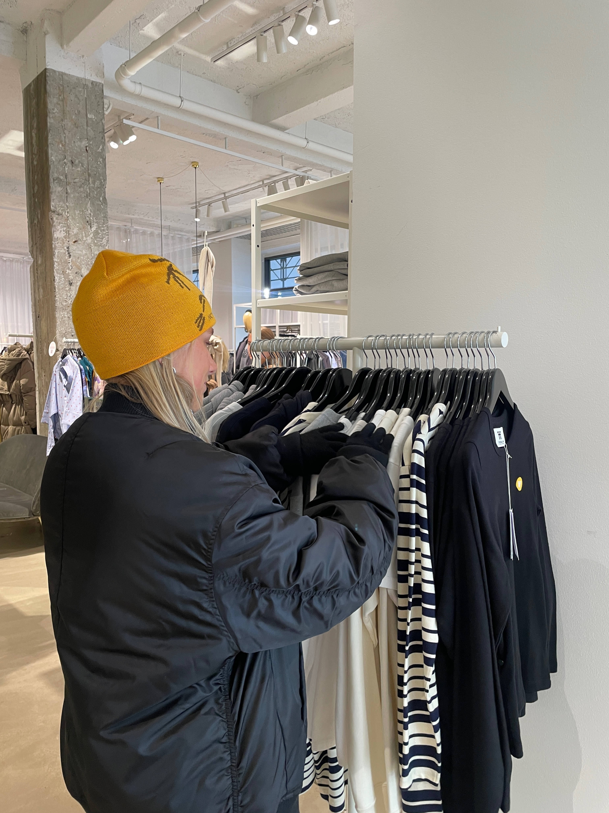

Kvalitet over kvantitet
Når du køber tøj, kan det godt svare sig at vælge kvalitet over kvantitet i det lange løb. Dermed kan man reducere behovet for hyppige indkøb, da det kan holde i mange år. På den måde undgår du også at støtte Fast Fashion, som er den største miljøbelastning indenfor tøjindustrien.
Minimalistisk mode
Med en minimalistisk tilgang til mode, kan du få en garderobe der gør mindre til mere. Du har altså få stykker tøj der er tidsløst og passer til det meste. Helårsgarderobe med basic tøj der aldrig går af mode.
Secondhand online & genbrug
Du kan med fordel gøre brug af diverse genbrugsbutikker og online secondhand shops. Her kan du både finde vintage, men også ubrugt tøj. Foretrækker du at købe genbrug i en fysisk genbrugsbutik, er der rig mulighed i Aarhus for dette. Se her hvilke genbrugsbutikker der ligger nær dig.
Tillidsbod
Det er blevet oftere og oftere at man kan spotte en tillidsbod i gadebilledet i Aarhus. Flere er nemlig begyndt at sætte tøj stativer, også kaldet tilllidsboder, ud foran deres lejlighed med tøj de sælger. Så når du begiver dig rundt i Aarhus kan du altså med fordel tage et kigge på disse stativer og ofte få tøj til rigtig gode priser og samtidig være med til at give gammelt tøj endnu en chance.
Loppemarked Aarhus
Der er rig mulighed for at gå på både indendørs og udendørs loppemarked i Aarhus. Det er et fantastisk sted til at finde brugt tøj til en brøkdel af prisen på nyt tøj. Se her hvilke loppemarkeder der er i Aarhus og hvornår de finder sted.